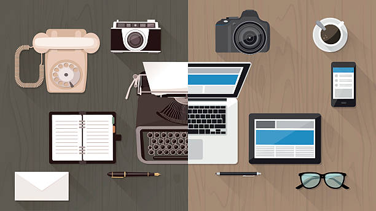
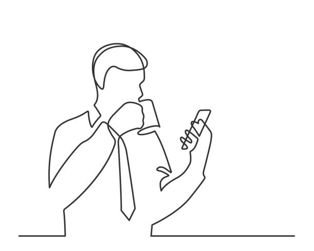

My views on
Modern Technology
What is Technology?
Everything has been connected to each other through technology since the dawn of civilisation. It has become one of our most basic demands in order to enjoy our lives to the fullest. We can describe technology as a method or set of skills that allows us to complete any work or activity more quickly and reliably. The application of technology has influenced our daily life in a variety of ways. Everything has become easier, simpler, and faster in this technological age. All types of organizations are embracing technology, resulting in increased productivity and efficiency. Technology is at the heart of the world's modernization. The finest part about the phrase technology is that it is constantly improving.
How would we acquire a tractor if we didn't have a plough, or a bulb if we didn't have laltin? It has continued to evolve in terms of quality of life and community. If we remove technology from our lives, we will undoubtedly return to the stone age. Japan is regarded as the monarch of modern technology, with the majority of breakthroughs taking place there. This also demonstrates that it is a good source of living income. Technology has very few drawbacks in our daily lives, and that is due to our carelessness. You'll get a jolt if you touch the switch box with moist hands, for example. Thus, if used properly, technology can be a great asset to the mankind.
How Technology has Affected My Life
The world is changing with technology. Technology has revolutionized our world and our daily lives over the years. Technology has provided us with incredible tools and resources, allowing us to access useful information at any time easier and faster.Devices like smartwatch and smartphone have been made possible by modern technology. Computers are becoming faster, more portable, and more powerful than they have ever been. Technology has made our lives easier, faster, better, and more enjoyable as a result of all of these revolutions. Technology's greatest benefit is that it brings people together. Technology has greatly impacted our lives. For myself, communication technology has greatly impacted my life.
As an CA, communicating with my clients is crutial. A day without me talking with my clients all day long on the phone has never happened ever since I have become an CA. Without technology, phones would have never been possible. Collecting and sending reports from the clients are just one email away. With technology. the world has become much smaller and people from one side of the world can talk to people on the other side. The Social medias like twitter and facebook have greatly impacted my life as talking with friends and family have now become so much easier.